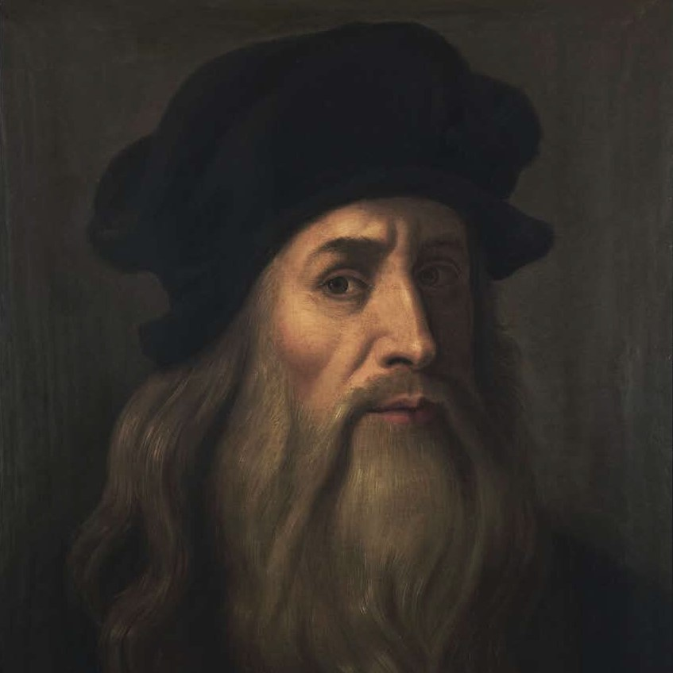
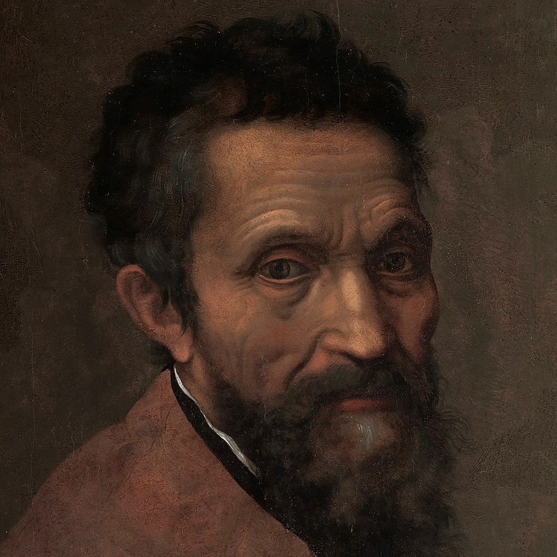
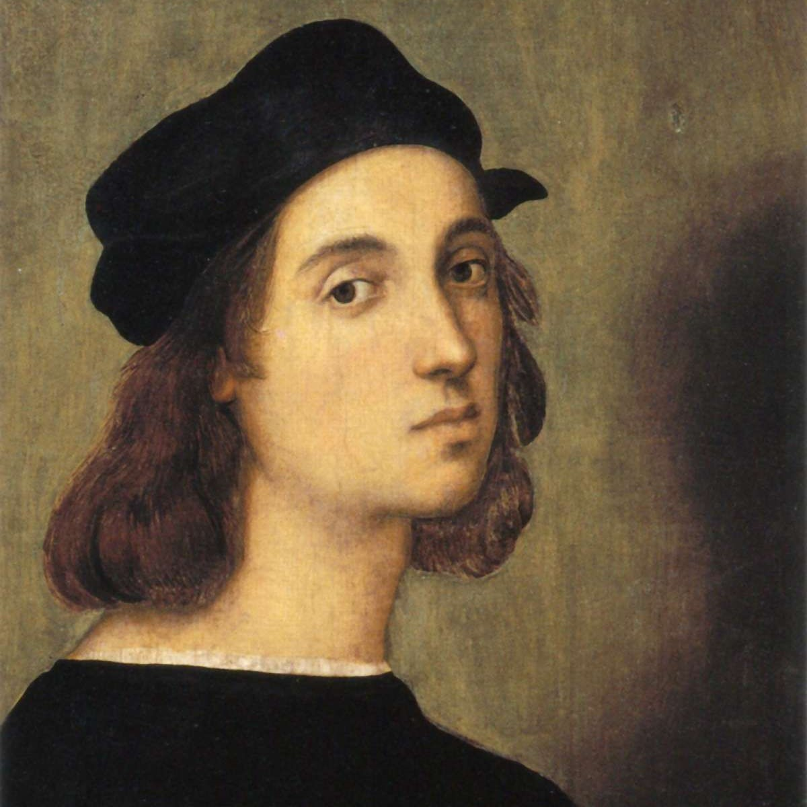
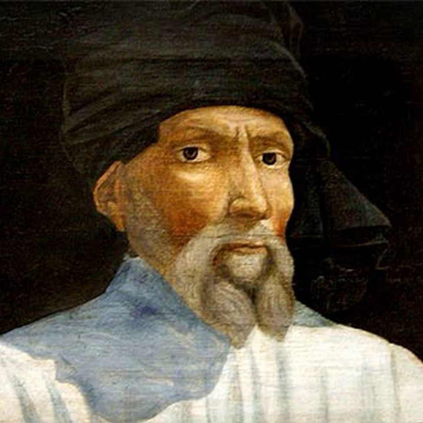

Leonardo da Vinci
Leonardo da Vinci (Leonardo di ser Piero da Vinci) (Vinci, 15 de abril de 14522-Amboise, 2 de mayo de 1519) fue un polímata florentino del Renacimiento italiano. Fue a la vez pintor, anatomista, arquitecto, paleontólogo, artista, botánico, científico, escritor, escultor, filósofo, ingeniero, inventor, músico, poeta y urbanista. Murió acompañado de Francesco Melzi, a quien legó sus proyectos, diseños y pinturas.
Tras pasar su infancia en su ciudad natal, Leonardo estudió con el célebre pintor florentino Andrea de Verrocchio. Sus primeros trabajos de importancia fueron creados en Milán al servicio del duque Ludovico Sforza. Trabajó a continuación en Roma, Bolonia y Venecia, y pasó los últimos años de su vida en Francia, por invitación del rey Francisco I.

Michelangelo Buonarroti
Michelangelo Buonarroti (Caprese, 6 de marzo de 1475-Roma, 18 de febrero de 1564), conocido en español como Miguel Ángel, fue un arquitecto, escultor y pintor italiano renacentista, considerado uno de los más grandes artistas de la historia tanto por sus esculturas como por sus pinturas y obra arquitectónica.
Desarrolló su labor artística a lo largo de más de setenta años entre Florencia y Roma, que era donde vivían sus grandes mecenas, la familia Médici de Florencia y los diferentes papas romanos.

Raffaello Sanzio
Raffaello Sanzio (Urbino, 6 de abril de 1483-Roma, 6 de abril de 1520), también conocido como Rafael de Urbino o, simplemente, como Rafael, fue un pintor y arquitecto italiano del Renacimiento.
Además de su labor pictórica, que sería admirada e imitada durante siglos, realizó importantes aportes en la arquitectura y, como inspector de antigüedades, se interesó en el estudio y conservación de los vestigios grecorromanos.3

Donato di Niccolò
Donato di Niccolò di Betto Bardi, conocido como Donatello (Florencia, Italia, 1386-Ibídem, 13 de diciembre de 1466), fue un artista y escultor italiano de principios del Renacimiento, uno de los padres del periodo junto con Leon Battista Alberti, Brunelleschi y Masaccio.
Donatello se convirtió en una fuerza innovadora en el campo de la escultura monumental y en el tratamiento de los relieves, donde logró representar una gran profundidad dentro de un mínimo plano, denominándose con el nombre de stiacciato, es decir «relieve aplanado o aplastado».